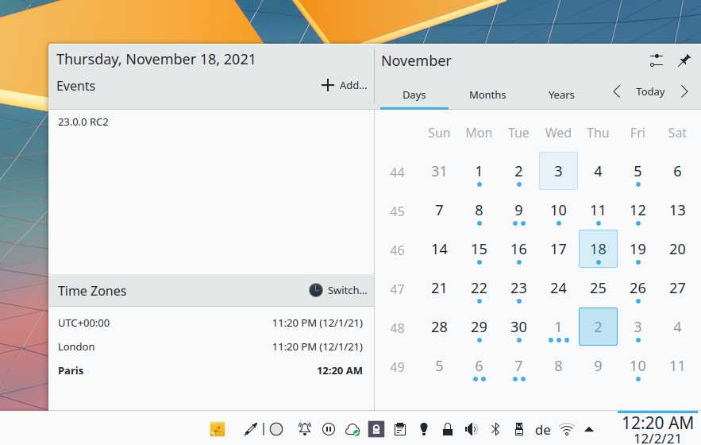
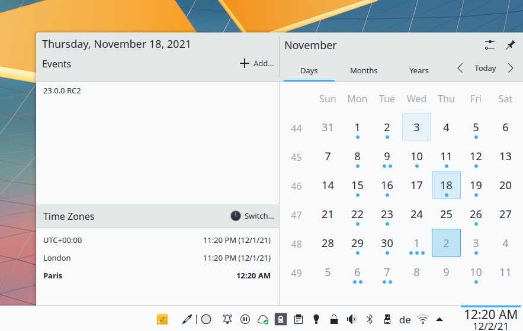

Synchronizacja z KDE Kontact
KOrganizer, Kalendar i KAddressBook mogą synchronizować Twój kalendarz, kontakty i zadania z serwerem Nextcloud.
Można to zrobić, wykonując następujące kroki, w zależności od tego, czy używasz KOrganizera czy Kalendara:
W KOrganizerze:
Otwórz KOrganizer i na liście kalendarzy (lewy dolny róg) kliknij prawym przyciskiem myszy i wybierz
Dodaj kalendarz:

Na wynikowej liście zasobów wybierz
Zasób oprogramowania do pracy grupowej DAV:

W Kalendarze:
Otwórz Kalendar i na pasku menu otwórz ustawienia, a następnie wybierz
Źródła kalendarza->Dodaj kalendarz:

Na wynikowej liście zasobów wybierz
Zasób oprogramowania do pracy grupowej DAV:

W KOrganizerze i Kalendarze:
Enter your username. As password, you need to generate an app-password/token (Learn more):
Wybierz
Nextcloudjako opcję serwera oprogramowania do pracy grupowej:
Wprowadź adres URL serwera Nextcloud i, jeśli to konieczne, ścieżkę instalacji (wszystko, co znajduje się po pierwszym znaku /, na przykład
mynextcloudwhttps://exampe.com/mynextcloud). Następnie kliknij dalej:

Możesz teraz przetestować połączenie, co może zająć trochę czasu w przypadku pierwszego połączenia. Jeśli nie zadziała, możesz wrócić i spróbować naprawić to za pomocą innych ustawień:


Wybierz nazwę tego zasobu, na przykład
PracalubDom. Domyślnie synchronizowane są zarówno CalDAV (kalendarz), jak i CardDAV (kontakty):

Informacja
Możesz ustawić ręcznie częstotliwość odświeżania zasobów kalendarza i kontaktów. Domyślnie ustawione jest na 5 minut i powinno wystarczyć w większości przypadków użycia. Kiedy tworzysz nowe spotkanie, jest ono od razu synchronizowane z Nextcloud. W celu oszczędzania energii lub planu transmisji danych komórkowych możesz to zmienić, klikając prawym przyciskiem myszy na element na liście kalendarzy i zaktualizować.
Po kilku sekundach lub minutach, w zależności od połączenia internetowego, znajdziesz swoje kalendarze i kontakty w aplikacjach KDE Kontact, KOrganizer, Kalendar i KAddressBook, a także w aplecie kalendarza Plasmy:
 
